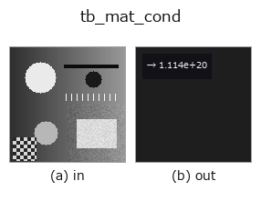

typed op• 資料種類:matrix → feature
• 呼叫:fullseye.apply(img, "tb_mat_cond", a=0.5, b=0.5)(2-D 的模型是一張圖 + 兩個純量旋鈕 a,b∈[0,1])

*圖為在 128×128 合成輸入上實際執行的輸出。左為輸入，右為輸出。點雲以俯視散點顯示(亮度 = z)，一維序列為折線，體資料為沿 z 的最大值投影，影片為中間影格，複數影像為振幅；無法成像的回傳值直接顯示數值。*
*旋鈕 a 不改變輸出(實測: 0.1 / 0.5 / 0.9 相同)。*
*旋鈕 b 不改變輸出(實測: 0.1 / 0.5 / 0.9 相同)。*
階段(前置運算子 → 本運算子，由左至右):
▸ tb_mat_cond: stages (docs site)
譜(2-範數)條件數 `s_max / s_min`——整個線性代數(linalg)運算子家族的數值健康指標(canary)。
> 以下的詳細說明為原文 —— 摘要與標題已翻譯。
`cond == 1` for an orthogonal/orthonormal matrix (the best possible);
`inf` (returned, not raised — the question "how conditioned is it?" has
that honest answer) for an exactly singular one. A solve against *A* loses
roughly `log10(cond(A))` significant digits (Golub & Van Loan §2.6):
• `cond ~ 1e3` — comfortable, ~13 digits survive.
• `cond ~ 1e8` — half the digits are gone; residuals may still look
small while parameters are off.
• `cond > 1e12 — **do not trust** :func:mat_solve` here: at best ~3
digits remain. Rescale/centre the problem, or switch to
:func:mat_lstsq / :func:mat_pinv with an honest `rcond`.
Defined for any rectangular `(m, n)` matrix (via its singular values).
HALCON: no direct operator (combine `norm_matrix` of *A* and of its
inverse).
Typed bridge of the math op `mat_cond into the 2-D evolution registry: the same implementation, called under the op(v, a, b) convention. This op has no tunable parameter; a and b` are unused.
• 範例資料目錄(下載 URL / 授權) —— 2-D 用 skimage.data(BSD/公有領域)加合成圖,3-D 給出真實資料源(Stanford/PDS 等)的下載 URL。
• 運算子來歷與參考文獻 —— 該運算子族所依據的研究/方法出處。
下面的程式已確認可以執行(與圖相同的輸入)。在 Studio 說明中，此區塊會變成按鈕，可當場載入並執行。
img_to_matrix 0.50 0.50 tb_mat_cond 0.50 0.50
▸ Load this pipeline · Load & run
下面的範例呼叫的是底層帳本運算子 mat_cond。此橋接運算子只是把同一實作適配為 fn(v, a, b) 慣例，行為完全相同(只是呼叫形式不同)。
• math_metrology — py -3.11 examples/math_metrology.py
feature 作為輸入)typed)tb_points_to_voxel · tb_estimate_point_normals · tb_iss_keypoints · tb_project_points · tb_render_point_depth · tb_statistical_outlier_removal · tb_radius_outlier_removal · tb_voxel_grid_downsample
*Provenance: ops.py — 2D 運算子登記表。本條目由 tools/opdocs.py md 自動產生(請勿手動編輯)。*
© 2026 Kazufumi Furuse — Fullseye operator documentation. Licensed under Apache-2.0.
{kind=link}